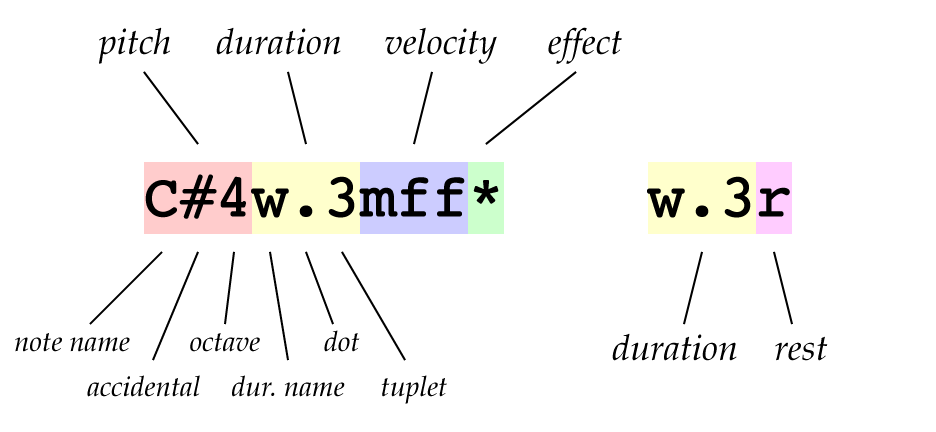

The jsPlayCommand library is a JavaScript implementation of the
play command from HyperTalk, which used a kind of notation
now known in the xTalk community as scripted music notation.
HyperTalk used sound resources, but with our Modern Technology™
* we can use MIDI!
You can play around with jsPlayCommand using the editor below. Load a preset song or enter your own using scripted music notation. The equivalent traditional music notation will appear above the text field as you type. Scroll down the page for a reference to scripted music notation. Then, hit the Play button to see how it sounds! You will have to either use Google Chrome or install Jazz-Soft.net Jazz-Plugin to be able to actually play the notes. Alternatively, you can click the Generate MIDI File button and download your creation as a standard MIDI file you can play anywhere!
Scripted music notation uses a sequence of note strings separated by
whitespace to represent a sequence of notes. Each note string representing
a sounded note is composed of four parts: a pitch, a duration,
a velocity, and an effect. A note string representing a rest
is composed of two parts: a duration and the letter r.

C,
D, E, F, G,
A, B), followed by zero or more b
or # symbols (representing flats and sharps respectively),
optionally followed by an octave number (00,
0, 1, 2, 3,
4, 5, 6, 7,
8, 9) (where octave 4 is the octave starting
with middle C and containing A440). Alternatively, the pitch may be
given as the letter M, N, or P
followed by the MIDI value; M60 is equivalent to
C4 and M69 is equivalent to A4.
If the note value or octave is not specified, the previous value is used.
: symbols (which double the note
value), . symbols (to create a dotted note), or digits
1 through 9 (to create a tuplet note). (Note
that a digit will create an individual note in a tuplet, not the whole
tuplet.)
|
|
|
d
followed by the duration of the note in 64ths of a quarter note.
If the duration is not specified, the previous value is used.
ppp, pp, p,
mpp, mp, m, mf,
mff, f, ff, fff.
Alternatively, the velocity may be given as the letter v
followed by the MIDI value from 0 (completely silent) to
127 (the loudest, equivalent to fff).
If the velocity is not specified, the previous value is used.
, | The note is counted for its full duration, but only played for half its duration (stoccato). |
* | The note keeps playing even after its duration is passed, until a ! is encountered (fermata). |
! | Stops a note started by * after the specified duration has passed. |
+ | The next note will start playing simultaneously with this note (chord). |
To use jsPlayCommand, embed the following script tags on your page:
<script type="text/javascript" src="http://www.kreativekorp.com/lib/jsPlayCommand/WebMIDIAPI.js"></script> <script type="text/javascript" src="http://www.kreativekorp.com/lib/jsPlayCommand/jsPlayCommand.js"></script>
Or, if you prefer to host it yourself, download jsPlayCommand.zip.
You may need to install Jazz-Soft.net Jazz-Plugin to be able to use jsPlayCommand (unless, of course, your browser already supports the Web MIDI API, currently found only in Chrome Canary).
Before jsPlayCommand can actually play any notes, it must be initialized using the following APIs:
jsPlayCommand.start(success, failure)jsPlayCommand.running()jsPlayCommand.start() has been called successfully.
jsPlayCommand.stop()Once jsPlayCommand is initialized, use one of the following APIs:
jsPlayCommand.play(instrument, notes)jsPlayCommand.play(instrument, tempo, notes)jsPlayCommand.play(channel, instrument, tempo, notes)jsPlayCommand.play(bankSelect, channel, instrument, tempo, notes)jsPlayCommand.play(output, bankSelect, channel, instrument, tempo, notes)jsPlayCommand.outputs().jsPlayCommand.BANK_SELECT_GM |
General MIDI mode. No bank select commands are sent. |
jsPlayCommand.BANK_SELECT_GS |
GS mode. CC0 is used for bank select; CC32 is not used. |
jsPlayCommand.BANK_SELECT_XG |
XG mode. CC32 is used for bank select; CC0 is not used. |
jsPlayCommand.BANK_SELECT_MMA |
MMA or GM2 mode. CC0 is used for MSB; CC32 is used for LSB. |
bank and instrument, or
one of the following instrument names:
|
|
|
|
"Alto Sax",
" alto_sax ", and "ALTO.SAX"
all map to instrument 65.
jsPlayCommand.playMultiple(arguments)jsPlayCommand.playMultiple(arguments, arguments)jsPlayCommand.playMultiple(arguments, arguments, arguments, ...)jsPlayCommand.play(). If you need to pass in an array
of arrays, as this demo does, use
jsPlayCommand.playMultiple.apply(jsPlayCommand, arrays).
jsPlayCommand.compile(instrument, notes)jsPlayCommand.compile(instrument, tempo, notes)jsPlayCommand.compile(channel, instrument, tempo, notes)jsPlayCommand.compile(bankSelect, channel, instrument, tempo, notes)jsPlayCommand.compile(trackName, bankSelect, channel, instrument, tempo, notes)jsPlayCommand.play(), except that a track
name is given in place of an output device. This API will always work,
independently of jsPlayCommand initialization or MIDI support.
jsPlayCommand.compileMultiple(arguments)jsPlayCommand.compileMultiple(arguments, arguments)jsPlayCommand.compileMultiple(arguments, arguments, arguments, ...)jsPlayCommand.playMultiple(),
except that track names are given in place of output devices. This API
will always work, independently of jsPlayCommand initialization or MIDI
support.
jsPlayCommand.compileBase64(instrument, notes)jsPlayCommand.compileBase64(instrument, tempo, notes)jsPlayCommand.compileBase64(channel, instrument, tempo, notes)jsPlayCommand.compileBase64(bankSelect, channel, instrument, tempo, notes)jsPlayCommand.compileBase64(trackName, bankSelect, channel, instrument, tempo, notes)jsPlayCommand.play(), except that a track
name is given in place of an output device. This API will always work,
independently of jsPlayCommand initialization or MIDI support.
jsPlayCommand.compileMultipleBase64(arguments)jsPlayCommand.compileMultipleBase64(arguments, arguments)jsPlayCommand.compileMultipleBase64(arguments, arguments, arguments, ...)jsPlayCommand.playMultiple(),
except that track names are given in place of output devices. This API
will always work, independently of jsPlayCommand initialization or MIDI
support.
By default, jsPlayCommand uses the first output device it finds, does not use any bank select commands, and plays on channel 0 with instrument 0 at a tempo of 120 bpm, unless a play command specifies otherwise. These defaults can be changed with the following APIs:
jsPlayCommand.outputs()jsPlayCommand.getDefaultOutput()jsPlayCommand.setDefaultOutput(output)jsPlayCommand.getDefaultBankSelect()jsPlayCommand.setDefaultBankSelect(bankSelect)jsPlayCommand.BANK_SELECT_GM |
General MIDI mode. No bank select commands are sent. |
jsPlayCommand.BANK_SELECT_GS |
GS mode. CC0 is used for bank select; CC32 is not used. |
jsPlayCommand.BANK_SELECT_XG |
XG mode. CC32 is used for bank select; CC0 is not used. |
jsPlayCommand.BANK_SELECT_MMA |
MMA or GM2 mode. CC0 is used for MSB; CC32 is used for LSB. |
jsPlayCommand.getDefaultChannel()jsPlayCommand.setDefaultChannel(channel)jsPlayCommand.getDefaultInstrument()jsPlayCommand.setDefaultInstrument(instrument)jsPlayCommand.getDefaultTempo()jsPlayCommand.setDefaultTempo(tempo)If you would like to play around with the API, there is a jsPlayCommand JSFiddle for you!
HyperSound
is a soundfont recreation of the original three sampled sounds included
with HyperCard for use with the play command.
The "harpsichord" sound is mapped to bank 73, instrument 6 (Harpsichord);
the "boing" sound is mapped to bank 73, instrument 103 (FX 8);
the "flute" sound is mapped to bank 73, instrument 73 (Flute).
(There is also a GM version with the same mappings in bank 0.)
jsPlayCommand recognizes these instruments in bank 73 as "HyperFlute",
"HyperBoing", and, naturally, "Hypsichord". You can load these in your
synthesizer and your play commands will sound just like they did in
HyperCard!
* MIDI (1982) is actually older than HyperTalk (1987). Neither is all that modern.